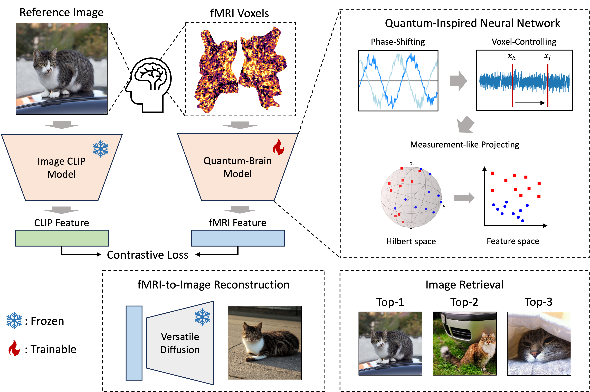
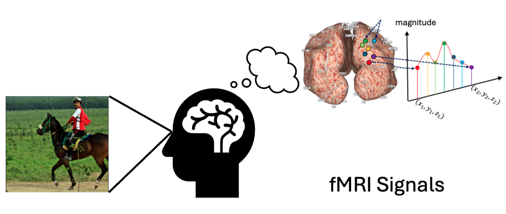
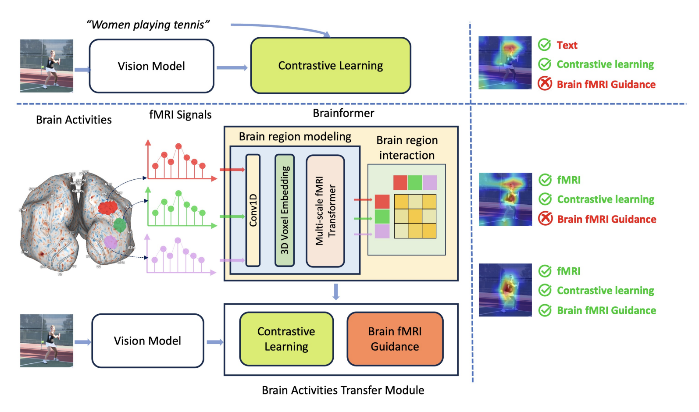
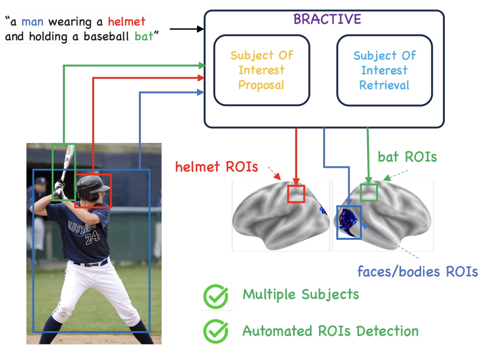
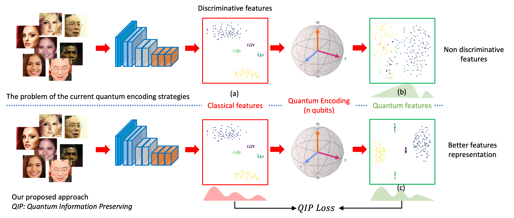
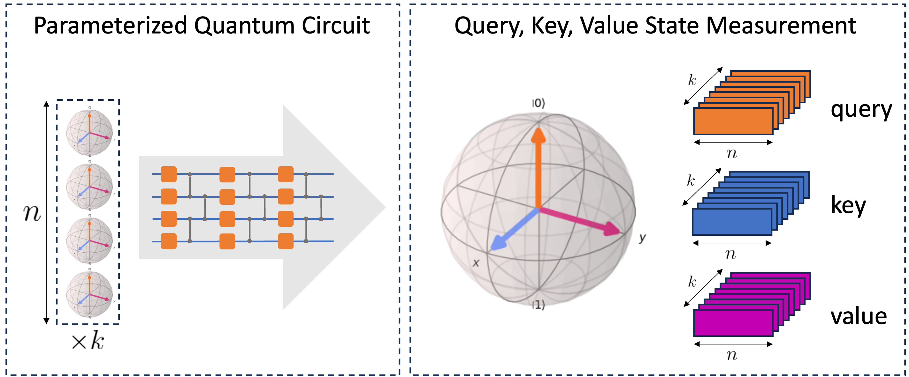
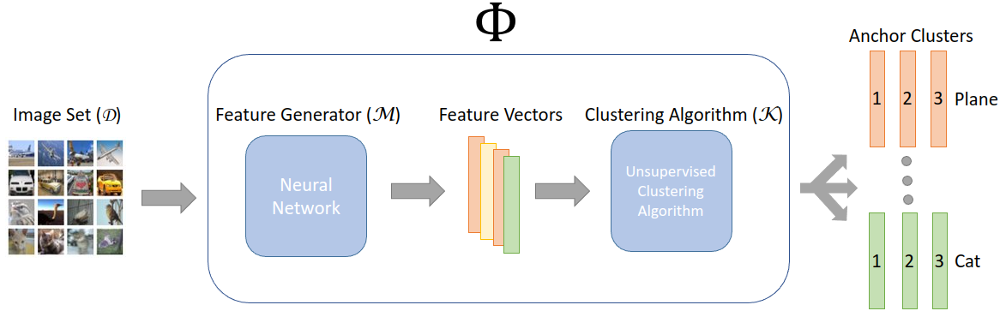
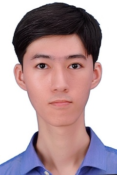

|  |
Quantum-Brain: Quantum-Inspired Neural Network Approach to Vision-Brain Understanding
Hoang-Quan Nguyen, Xuan-Bac Nguyen, Hugh Churchill, Arabinda Kumar Choudhary, Pawan Sinha, Samee U. Khan, and Khoa Luu Under Review, 2025 |
|  |
Hierarchical Quantum Control Gates for Functional MRI Understanding
Xuan-Bac Nguyen, Hoang-Quan Nguyen, Hugh Churchill, Samee U. Khan, and Khoa Luu IEEE Workshop on Signal Processing Systems, 2024 |
|  |
Brainformer: Mimic Human Visual Brain Functions to Machine Vision Models via fMRI
Xuan-Bac Nguyen, Xin Li, Pawan Sinha, Samee U. Khan, and Khoa Luu Neurocomputing, 2024 |
|  |
BRACTIVE: A Brain Activation Approach to Human Visual Brain Learning
Xuan-Bac Nguyen, Hojin Jang, Xin Li, Samee U. Khan, Pawan Sinha, and Khoa Luu Under Review, 2024 |
|  |
Quantum Visual Feature Encoding Revisited
Xuan-Bac Nguyen, Hoang-Quan Nguyen, Hugh Churchill, Samee U. Khan, and Khoa Luu Quantum Machine Intelligence, 2024 |
|  |
QClusformer: A Quantum Transformer-based Framework for Unsupervised Visual Clustering
Xuan-Bac Nguyen, Hoang-Quan Nguyen, Samuel Yen-Chi Chen, Samee U. Khan, Hugh Churchill, and Khoa Luu IEEE Quantum Week 2024 Workshops, 2024 |
|  |
Quantum Vision Clustering
Xuan Bac Nguyen, Hugh Churchill, Khoa Luu, and Samee U. Khan Under Review, 2024 |
Our Team

|
Dr. Khoa Luu
Assistant Professor Project Leader |
||

|
Xuan Bac Nguyen
PhD Candidate |
 |
Hoang-Quan Nguyen
PhD Candidate |